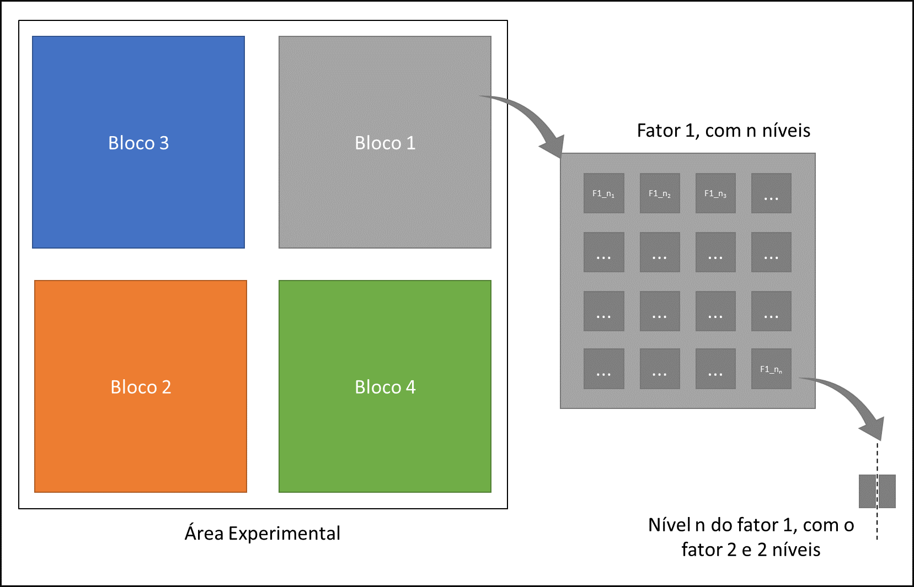
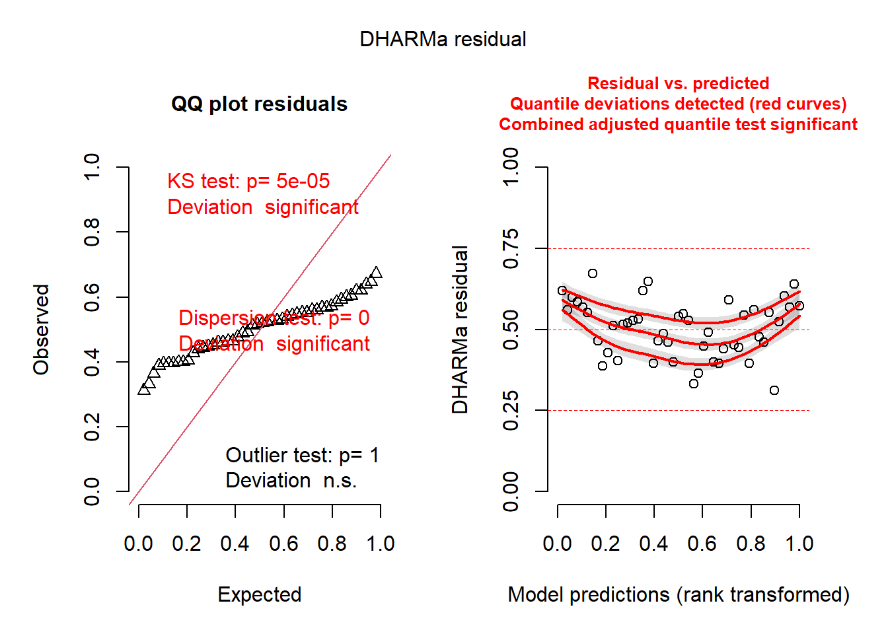
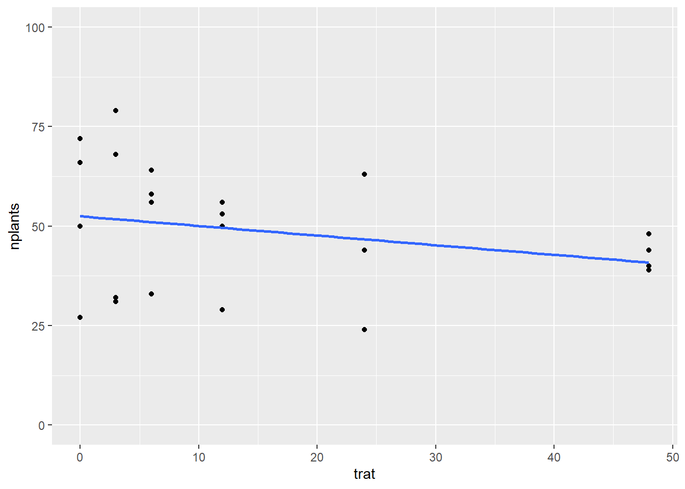
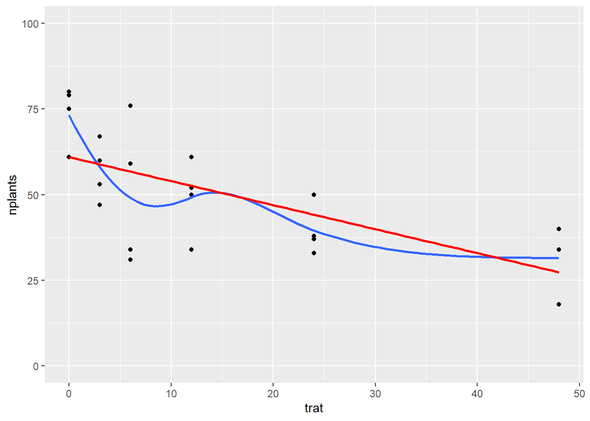
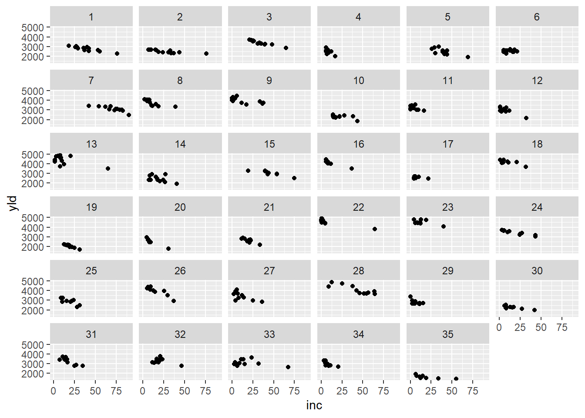

library(gsheet)
library(tidyverse)
library(lme4)
library(car)
library(performance)
library(DHARMa)
library(emmeans)
library(multcomp)
library(multcompView)
library(patchwork)
library(r4pde)Aula 9
Aula 9
Carregando pacotes
Análise de um experimento em parcelas subdivididas
Experimentos em parcelas subdivididas são utilizados quando o nível de um fator primário (ou tratamento) é aplicado a uma parcela relativamente grande e todos os níveis de um segundo fator secundário são aplicados às subparcelas desta parcela maior. Os tratamentos primários são distribuídos às parcelas de acordo com um delineamento especificado, já os tratamentos secundários são distribuídos às subparcelas de forma aleatória.
Importando os dados
Para exemplificar a análise de um experimento em parcelas subdivididas, será utilizado um conjunto de dados onde o objetivo foi avaliar o índice de doença e produtividade de híbridos de milho (fator primário) ao serem submetidos a dois métodos de inoculação (fator secundário). Um esboço desse arranjo experimental é apresentado abaixo.

milho <- gsheet::gsheet2tbl("https://docs.google.com/spreadsheets/d/1bq2N19DcZdtax2fQW9OHSGMR0X2__Z9T/edit#gid=1345524759")glimpse(milho)Rows: 48
Columns: 5
$ hybrid <chr> "30F53 HX", "30F53 HX", "30F53 HX", "30F53 HX", "30F53 YH", "30…
$ block <dbl> 1, 2, 3, 4, 1, 2, 3, 4, 1, 2, 3, 4, 1, 2, 3, 4, 1, 2, 3, 4, 1, …
$ method <chr> "pin", "pin", "pin", "pin", "pin", "pin", "pin", "pin", "pin", …
$ index <dbl> 21.1, 21.1, 23.3, 35.6, 21.1, 22.2, 27.3, 27.8, 20.0, 20.0, 27.…
$ yield <dbl> 12920, 9870, 8920, 13120, 12060, 7860, 7410, 10300, 11700, 1070…Visualização gráfica
Índice de doença
Para visualização dos dados relacionados ao índice de doença e o método de inoculação será construído um gráfico de pontos (geom_jitter) acrescido do intervalo de confiança (stat_summary(fund.data = "mean_cl_boot"). Para gerar uma figura com os gráficos individuais de cada tratamento é utilizada a função facet_wrap.
milho %>%
ggplot(aes(method, index))+
geom_jitter(color = "darkred", width = 0.1, alpha = 0.4)+
stat_summary(fund.data = "mean_cl_boot", color = "black", width = 0.5)+
facet_wrap (~hybrid)
Produtividade
Para os dados relacionados à produtividade e o método de inoculação será construído um gráfico de similar ao anterior.
milho %>%
ggplot(aes(method, yield))+
geom_jitter(color = "darkred", width = 0.1, alpha = 0.4)+
stat_summary(fund.data = "mean_cl_boot", color = "black", width = 0.5)+
facet_wrap (~hybrid)
Análise em parcelas subdivididas
Índice de doença (index)
Construção do modelo
Antes de definir o modelo, será preciso transformar a coluna de dados “block” para fator (funções mutate e as.factor).
milho <- milho %>%
mutate(block = as.factor(block))Para a análise dos dados, será construído um modelo linear de efeitos mistos com a função lmer (pacote lme4), onde definimos os fatores fixos e os fatores aleatórios.
mix <- lmer(index ~ hybrid*method + block + (1|block/hybrid),
data = milho)ANOVA
Anova(mix)Analysis of Deviance Table (Type II Wald chisquare tests)
Response: index
Chisq Df Pr(>Chisq)
hybrid 15.5971 5 0.008094 **
method 4.6963 1 0.030228 *
block 0.2157 3 0.975023
hybrid:method 15.8060 5 0.007420 **
---
Signif. codes: 0 '***' 0.001 '**' 0.01 '*' 0.05 '.' 0.1 ' ' 1A análise de variância demonstra que há interação entre os fatores (hybrid:method). Assim seria preciso realizar os desdobramentos e comparar híbridos dentro de métodos e métodos dentro de híbridos. Mas antes, é preciso conferir se os dados atendem às pressuposições da ANOVA.
Avaliação das premissas
check_normality(mix)OK: residuals appear as normally distributed (p = 0.635).check_heteroscedasticity(mix)Warning: Heteroscedasticity (non-constant error variance) detected (p = 0.009).plot(simulateResiduals(mix))
Com as análises acima, conclui-se que os dados seguem distribuição normal. Porém, não há homogeneidade de variância entre os grupos. Logo será preciso uma alternativa para prosseguir a análise, por exemplo a transformação dos dados com raiz quadrada.
Transformação dos dados - Raiz quadrada
mix2 <- lmer(sqrt(index) ~ hybrid*method + block + (1|block/hybrid),
data = milho)ANOVA - Dados transformados
anova(mix2)Analysis of Variance Table
npar Sum Sq Mean Sq F value
hybrid 5 2.14415 0.42883 3.0632
method 1 0.54438 0.54438 3.8886
block 3 0.01004 0.00335 0.0239
hybrid:method 5 1.87331 0.37466 2.6762Avaliação das premissas - Dados transformados
Com as funções check_normality e check_heteroscedasticity (pacote Performance):
check_normality(mix2)OK: residuals appear as normally distributed (p = 0.440).check_heteroscedasticity(mix2)OK: Error variance appears to be homoscedastic (p = 0.971).Através de um gráfico Q-Q (funções qqnorm e qqline):
qqnorm(residuals(mix2))
qqline(residuals(mix2))
Com a função simulateResiduals (pacote DHARMa):
plot(simulateResiduals(mix2))
Apesar da análise via DHARMa ter apresentado problemas, as demais avaliações (via Performance e QQ-Plot) se mostraram favoráveis, logo é possível prosseguir para a comparação de médias.
Comparação de médias - Dados transformados
Como visto pela ANOVA, há efeito de interação, logo será preciso realizar desdobramentos para as comparações:
Híbridos dentro de métodos:
index <- emmeans(mix2, ~hybrid | method,
type = "response")
cld(index, Letters = LETTERS)method = pin:
hybrid response SE df lower.CL upper.CL .group
BG7049H 19.4 10.7 6084 4.10 46.0 A
30K64 20.3 10.9 6084 4.51 47.4 A
30F53 YH 24.5 12.0 6084 6.61 53.7 AB
30F53 HX 25.0 12.1 6084 6.84 54.4 AB
30S31YH 31.7 13.7 6084 10.57 64.2 AB
30S31H 37.1 14.8 6084 13.79 71.8 B
method = silk:
hybrid response SE df lower.CL upper.CL .group
BG7049H 19.1 10.6 6084 3.96 45.6 A
30K64 21.3 11.2 6084 5.00 48.9 A
30F53 HX 24.4 12.0 6084 6.56 53.6 A
30F53 YH 26.0 12.4 6084 7.42 56.0 A
30S31H 26.3 12.5 6084 7.57 56.4 A
30S31YH 26.4 12.5 6084 7.62 56.5 A
Results are averaged over the levels of: block
Degrees-of-freedom method: kenward-roger
Confidence level used: 0.95
Intervals are back-transformed from the sqrt scale
Note: contrasts are still on the sqrt scale
P value adjustment: tukey method for comparing a family of 6 estimates
significance level used: alpha = 0.05
NOTE: If two or more means share the same grouping symbol,
then we cannot show them to be different.
But we also did not show them to be the same. Métodos dentro de híbridos
index2 <- emmeans(mix2, ~method | hybrid,
type = "response")
cld(index2, Letters = letters)hybrid = 30F53 HX:
method response SE df lower.CL upper.CL .group
silk 24.4 12.0 6084 6.56 53.6 a
pin 25.0 12.1 6084 6.84 54.4 a
hybrid = 30F53 YH:
method response SE df lower.CL upper.CL .group
pin 24.5 12.0 6084 6.61 53.7 a
silk 26.0 12.4 6084 7.42 56.0 a
hybrid = 30K64:
method response SE df lower.CL upper.CL .group
pin 20.3 10.9 6084 4.51 47.4 a
silk 21.3 11.2 6084 5.00 48.9 a
hybrid = 30S31H:
method response SE df lower.CL upper.CL .group
silk 26.3 12.5 6084 7.57 56.4 a
pin 37.1 14.8 6084 13.79 71.8 b
hybrid = 30S31YH:
method response SE df lower.CL upper.CL .group
silk 26.4 12.5 6084 7.62 56.5 a
pin 31.7 13.7 6084 10.57 64.2 a
hybrid = BG7049H:
method response SE df lower.CL upper.CL .group
silk 19.1 10.6 6084 3.96 45.6 a
pin 19.4 10.7 6084 4.10 46.0 a
Results are averaged over the levels of: block
Degrees-of-freedom method: kenward-roger
Confidence level used: 0.95
Intervals are back-transformed from the sqrt scale
Note: contrasts are still on the sqrt scale
significance level used: alpha = 0.05
NOTE: If two or more means share the same grouping symbol,
then we cannot show them to be different.
But we also did not show them to be the same. Produtividade (yield)
Seguindo os mesmos procedimentos para o índice de doença, será conduzida avaliação da produtividade.
Construção do modelo
mix3 <- lmer(yield ~ hybrid*method + block + (1|block/hybrid),
data = milho)ANOVA
Anova(mix3)Analysis of Deviance Table (Type II Wald chisquare tests)
Response: yield
Chisq Df Pr(>Chisq)
hybrid 25.5991 5 0.0001067 ***
method 0.1052 1 0.7456934
block 2.3564 3 0.5018078
hybrid:method 25.9302 5 9.206e-05 ***
---
Signif. codes: 0 '***' 0.001 '**' 0.01 '*' 0.05 '.' 0.1 ' ' 1Avaliação das premissas
check_normality(mix3)OK: residuals appear as normally distributed (p = 0.211).check_heteroscedasticity(mix3)Warning: Heteroscedasticity (non-constant error variance) detected (p < .001).A análise pelas funções check_normality e check_heteroscedasticity demonstram que os dados possuem normalidade na distribuição dos resíduos, no entanto, não há homogeneidade de variância entre os grupos. Portanto, também será preciso realizar transformação.
Transformação dos dados - Raiz quadrada
mix4 <- lmer(sqrt(yield) ~ hybrid*method + block + (1|block/hybrid),
data = milho)ANOVA - Dados transformados
anova(mix4)Analysis of Variance Table
npar Sum Sq Mean Sq F value
hybrid 5 272.298 54.460 5.1118
method 1 0.554 0.554 0.0520
block 3 25.150 8.383 0.7869
hybrid:method 5 260.999 52.200 4.8997Avaliação das premissas - Dados transformados
check_normality(mix4)OK: residuals appear as normally distributed (p = 0.214).check_heteroscedasticity(mix4)OK: Error variance appears to be homoscedastic (p = 0.686).Comparação de médias - Dados transformados
Híbridos dentro de métodos:
yield <- emmeans(mix4, ~ hybrid | method,
type = "response")
cld(index, Letters = LETTERS)method = pin:
hybrid response SE df lower.CL upper.CL .group
BG7049H 19.4 10.7 6084 4.10 46.0 A
30K64 20.3 10.9 6084 4.51 47.4 A
30F53 YH 24.5 12.0 6084 6.61 53.7 AB
30F53 HX 25.0 12.1 6084 6.84 54.4 AB
30S31YH 31.7 13.7 6084 10.57 64.2 AB
30S31H 37.1 14.8 6084 13.79 71.8 B
method = silk:
hybrid response SE df lower.CL upper.CL .group
BG7049H 19.1 10.6 6084 3.96 45.6 A
30K64 21.3 11.2 6084 5.00 48.9 A
30F53 HX 24.4 12.0 6084 6.56 53.6 A
30F53 YH 26.0 12.4 6084 7.42 56.0 A
30S31H 26.3 12.5 6084 7.57 56.4 A
30S31YH 26.4 12.5 6084 7.62 56.5 A
Results are averaged over the levels of: block
Degrees-of-freedom method: kenward-roger
Confidence level used: 0.95
Intervals are back-transformed from the sqrt scale
Note: contrasts are still on the sqrt scale
P value adjustment: tukey method for comparing a family of 6 estimates
significance level used: alpha = 0.05
NOTE: If two or more means share the same grouping symbol,
then we cannot show them to be different.
But we also did not show them to be the same. Métodos dentro de híbridos
yield2 <- emmeans(mix4, ~ method | hybrid,
type = "response")
cld(index2, Letters = letters)hybrid = 30F53 HX:
method response SE df lower.CL upper.CL .group
silk 24.4 12.0 6084 6.56 53.6 a
pin 25.0 12.1 6084 6.84 54.4 a
hybrid = 30F53 YH:
method response SE df lower.CL upper.CL .group
pin 24.5 12.0 6084 6.61 53.7 a
silk 26.0 12.4 6084 7.42 56.0 a
hybrid = 30K64:
method response SE df lower.CL upper.CL .group
pin 20.3 10.9 6084 4.51 47.4 a
silk 21.3 11.2 6084 5.00 48.9 a
hybrid = 30S31H:
method response SE df lower.CL upper.CL .group
silk 26.3 12.5 6084 7.57 56.4 a
pin 37.1 14.8 6084 13.79 71.8 b
hybrid = 30S31YH:
method response SE df lower.CL upper.CL .group
silk 26.4 12.5 6084 7.62 56.5 a
pin 31.7 13.7 6084 10.57 64.2 a
hybrid = BG7049H:
method response SE df lower.CL upper.CL .group
silk 19.1 10.6 6084 3.96 45.6 a
pin 19.4 10.7 6084 4.10 46.0 a
Results are averaged over the levels of: block
Degrees-of-freedom method: kenward-roger
Confidence level used: 0.95
Intervals are back-transformed from the sqrt scale
Note: contrasts are still on the sqrt scale
significance level used: alpha = 0.05
NOTE: If two or more means share the same grouping symbol,
then we cannot show them to be different.
But we also did not show them to be the same. Análise de Regressão Linear
estande <- gsheet2tbl("https://docs.google.com/spreadsheets/d/1bq2N19DcZdtax2fQW9OHSGMR0X2__Z9T/edit#gid=401662555")
estande <- estande %>%
mutate(bloco = as.factor(bloco))Visualização gráfica
estande %>%
ggplot(aes(trat, nplants))+
geom_jitter(width = 0.2, alpha = 0.2, color = "darkred")+
stat_summary(fun.data = "mean_cl_boot")+
geom_smooth(method = "lm", se = FALSE)+
facet_wrap(~exp)
estande %>%
ggplot(aes(trat, nplants))+
geom_jitter(width = 0.2, alpha = 0.2, color = "darkred")+
stat_summary(fun.data = "mean_cl_boot")+
geom_smooth(method = "lm", se = FALSE)
Comparação por experimentos
Exp. 1
exp1 <- estande %>%
filter(exp == 1)
exp1 %>%
ggplot(aes(trat, nplants))+
geom_point()+
ylim (0,100)+
geom_smooth(method = "lm", se = FALSE)
lm1 <- lm (nplants ~ trat,
data = exp1)
summary(lm1)
Call:
lm(formula = nplants ~ trat, data = exp1)
Residuals:
Min 1Q Median 3Q Max
-25.500 -6.532 1.758 8.573 27.226
Coefficients:
Estimate Std. Error t value Pr(>|t|)
(Intercept) 52.5000 4.2044 12.487 1.84e-11 ***
trat -0.2419 0.1859 -1.301 0.207
---
Signif. codes: 0 '***' 0.001 '**' 0.01 '*' 0.05 '.' 0.1 ' ' 1
Residual standard error: 15 on 22 degrees of freedom
Multiple R-squared: 0.07148, Adjusted R-squared: 0.02928
F-statistic: 1.694 on 1 and 22 DF, p-value: 0.2066Exp. 2
exp2 <- estande %>%
filter(exp == 2)
exp2 %>%
ggplot(aes(trat, nplants))+
geom_point()+
ylim (0,100)+
geom_smooth (se = FALSE)+
geom_smooth(method = "lm", se = FALSE, color = "red")
Uma opção para linearizar a curva seria aplicar log no tratamento (log(trat)).
lm2 <- lm (nplants ~ trat,
data = exp2)
summary(lm2)
Call:
lm(formula = nplants ~ trat, data = exp2)
Residuals:
Min 1Q Median 3Q Max
-25.7816 -7.7150 0.5653 8.1929 19.2184
Coefficients:
Estimate Std. Error t value Pr(>|t|)
(Intercept) 60.9857 3.6304 16.798 4.93e-14 ***
trat -0.7007 0.1605 -4.365 0.000247 ***
---
Signif. codes: 0 '***' 0.001 '**' 0.01 '*' 0.05 '.' 0.1 ' ' 1
Residual standard error: 12.95 on 22 degrees of freedom
Multiple R-squared: 0.4641, Adjusted R-squared: 0.4398
F-statistic: 19.05 on 1 and 22 DF, p-value: 0.0002473Exp. 3
exp3 <- estande %>%
filter(exp == 3)
exp1 %>%
ggplot(aes(trat, nplants))+
geom_point()+
ylim (0,100)+
geom_smooth(method = "lm", se = FALSE)
lm3 <- lm (nplants ~ trat,
data = exp3)
summary(lm3)
Call:
lm(formula = nplants ~ trat, data = exp3)
Residuals:
Min 1Q Median 3Q Max
-26.5887 -3.9597 0.7177 5.5806 19.8952
Coefficients:
Estimate Std. Error t value Pr(>|t|)
(Intercept) 95.7500 2.9529 32.425 < 2e-16 ***
trat -0.7634 0.1306 -5.847 6.97e-06 ***
---
Signif. codes: 0 '***' 0.001 '**' 0.01 '*' 0.05 '.' 0.1 ' ' 1
Residual standard error: 10.53 on 22 degrees of freedom
Multiple R-squared: 0.6085, Adjusted R-squared: 0.5907
F-statistic: 34.19 on 1 and 22 DF, p-value: 6.968e-06glm1 <- glm(nplants ~ trat,
family = "gaussian",
data = exp1)
summary(glm1)
Call:
glm(formula = nplants ~ trat, family = "gaussian", data = exp1)
Coefficients:
Estimate Std. Error t value Pr(>|t|)
(Intercept) 52.5000 4.2044 12.487 1.84e-11 ***
trat -0.2419 0.1859 -1.301 0.207
---
Signif. codes: 0 '***' 0.001 '**' 0.01 '*' 0.05 '.' 0.1 ' ' 1
(Dispersion parameter for gaussian family taken to be 224.9751)
Null deviance: 5330.5 on 23 degrees of freedom
Residual deviance: 4949.5 on 22 degrees of freedom
AIC: 202
Number of Fisher Scoring iterations: 2AIC(glm1)[1] 202.0045glm2a <- glm(nplants ~ trat,
family = "gaussian",
data = exp2)
summary(glm2a)
Call:
glm(formula = nplants ~ trat, family = "gaussian", data = exp2)
Coefficients:
Estimate Std. Error t value Pr(>|t|)
(Intercept) 60.9857 3.6304 16.798 4.93e-14 ***
trat -0.7007 0.1605 -4.365 0.000247 ***
---
Signif. codes: 0 '***' 0.001 '**' 0.01 '*' 0.05 '.' 0.1 ' ' 1
(Dispersion parameter for gaussian family taken to be 167.7464)
Null deviance: 6886.6 on 23 degrees of freedom
Residual deviance: 3690.4 on 22 degrees of freedom
AIC: 194.96
Number of Fisher Scoring iterations: 2AIC(glm2a)[1] 194.9597glm2b <- glm(nplants ~ trat,
family = poisson(link = "log"),
data = exp2)
summary(glm2b)
Call:
glm(formula = nplants ~ trat, family = poisson(link = "log"),
data = exp2)
Coefficients:
Estimate Std. Error z value Pr(>|z|)
(Intercept) 4.134189 0.037583 110.003 < 2e-16 ***
trat -0.016270 0.002059 -7.901 2.76e-15 ***
---
Signif. codes: 0 '***' 0.001 '**' 0.01 '*' 0.05 '.' 0.1 ' ' 1
(Dispersion parameter for poisson family taken to be 1)
Null deviance: 139.783 on 23 degrees of freedom
Residual deviance: 69.578 on 22 degrees of freedom
AIC: 210.24
Number of Fisher Scoring iterations: 4AIC(glm2b)[1] 210.2353glm3 <- glm(nplants ~ trat,
family = "gaussian",
data = exp3)
summary(glm3)
Call:
glm(formula = nplants ~ trat, family = "gaussian", data = exp3)
Coefficients:
Estimate Std. Error t value Pr(>|t|)
(Intercept) 95.7500 2.9529 32.425 < 2e-16 ***
trat -0.7634 0.1306 -5.847 6.97e-06 ***
---
Signif. codes: 0 '***' 0.001 '**' 0.01 '*' 0.05 '.' 0.1 ' ' 1
(Dispersion parameter for gaussian family taken to be 110.9787)
Null deviance: 6235.8 on 23 degrees of freedom
Residual deviance: 2441.5 on 22 degrees of freedom
AIC: 185.04
Number of Fisher Scoring iterations: 2AIC(glm3)[1] 185.0449glm3b <- glm(nplants ~ trat,
family = poisson(link = "log"),
data = exp3)
summary(glm3b)
Call:
glm(formula = nplants ~ trat, family = poisson(link = "log"),
data = exp3)
Coefficients:
Estimate Std. Error z value Pr(>|z|)
(Intercept) 4.571590 0.029539 154.762 < 2e-16 ***
trat -0.009965 0.001488 -6.697 2.13e-11 ***
---
Signif. codes: 0 '***' 0.001 '**' 0.01 '*' 0.05 '.' 0.1 ' ' 1
(Dispersion parameter for poisson family taken to be 1)
Null deviance: 77.906 on 23 degrees of freedom
Residual deviance: 29.952 on 22 degrees of freedom
AIC: 183.93
Number of Fisher Scoring iterations: 4AIC(glm3b)[1] 183.9324Análise dos experimento como um conjuto
glm_exp <- glmer(nplants ~ trat + (trat | exp),
family = "gaussian",
data = estande)
summary(glm_exp)Linear mixed model fit by REML ['lmerMod']
Formula: nplants ~ trat + (trat | exp)
Data: estande
REML criterion at convergence: 580.8
Scaled residuals:
Min 1Q Median 3Q Max
-2.0988 -0.6091 0.1722 0.6360 1.9963
Random effects:
Groups Name Variance Std.Dev. Corr
exp (Intercept) 510.68405 22.5983
trat 0.05516 0.2349 -0.82
Residual 167.91303 12.9581
Number of obs: 72, groups: exp, 3
Fixed effects:
Estimate Std. Error t value
(Intercept) 69.7452 13.2146 5.278
trat -0.5687 0.1643 -3.462
Correlation of Fixed Effects:
(Intr)
trat -0.731
optimizer (nloptwrap) convergence code: 0 (OK)
Model failed to converge with max|grad| = 0.00274249 (tol = 0.002, component 1)AIC(glm_exp)[1] 592.8402glm_exp_2 <- glmer(nplants ~ trat + (trat | exp),
family = poisson(link = "log"),
data = estande)
summary(glm_exp_2)Generalized linear mixed model fit by maximum likelihood (Laplace
Approximation) [glmerMod]
Family: poisson ( log )
Formula: nplants ~ trat + (trat | exp)
Data: estande
AIC BIC logLik deviance df.resid
660.7 672.1 -325.4 650.7 67
Scaled residuals:
Min 1Q Median 3Q Max
-3.6247 -0.8083 0.1042 0.9601 3.6511
Random effects:
Groups Name Variance Std.Dev. Corr
exp (Intercept) 6.425e-02 0.253478
trat 1.602e-05 0.004003 -0.17
Number of obs: 72, groups: exp, 3
Fixed effects:
Estimate Std. Error z value Pr(>|z|)
(Intercept) 4.223397 0.147793 28.577 < 2e-16 ***
trat -0.010434 0.002538 -4.111 3.93e-05 ***
---
Signif. codes: 0 '***' 0.001 '**' 0.01 '*' 0.05 '.' 0.1 ' ' 1
Correlation of Fixed Effects:
(Intr)
trat -0.192AIC(glm_exp_2)[1] 660.7282___
install.packages("pak")
pak::pkg_install("Icens")
pak::pkg_install("emdelponte/r4pde")remotes::install_github("emdelponte/r4pde")library(r4pde)
wm <- WhiteMoldSoybean
wm %>%
ggplot (aes (inc, yld))+
geom_point()+
facet_wrap(~study)
Cálculo de coeficiente angular para todos os ensaios
wm %>%
ggplot (aes (inc, yld))+
geom_point()+
geom_smooth(method = "lm")
mofo1 <- lm(yld ~ inc,
data = wm)
summary(mofo1)
Call:
lm(formula = yld ~ inc, data = wm)
Residuals:
Min 1Q Median 3Q Max
-1657.85 -594.50 -91.32 531.76 1693.15
Coefficients:
Estimate Std. Error t value Pr(>|t|)
(Intercept) 3299.619 56.451 58.451 < 2e-16 ***
inc -9.261 2.108 -4.393 1.45e-05 ***
---
Signif. codes: 0 '***' 0.001 '**' 0.01 '*' 0.05 '.' 0.1 ' ' 1
Residual standard error: 745.8 on 380 degrees of freedom
Multiple R-squared: 0.04833, Adjusted R-squared: 0.04582
F-statistic: 19.3 on 1 and 380 DF, p-value: 1.452e-05Cálculo de coeficiente angular para os ensaios individualmente
wm %>%
ggplot (aes (inc, yld, group = factor(study)))+
geom_point()+
geom_smooth(method = "lm", se = F)
library(broom)
mofo2 <- wm %>%
group_by(study) %>%
do(tidy(lm(.$study ~ .$inc), conf.int = TRUE))
mofo2# A tibble: 70 × 8
# Groups: study [35]
study term estimate std.error statistic p.value conf.low conf.high
<dbl> <chr> <dbl> <dbl> <dbl> <dbl> <dbl> <dbl>
1 1 (Intercept) 1 e+ 0 0 Inf 0 1 e+ 0 1 e+ 0
2 1 .$inc 0 0 NaN NaN 0 0
3 2 (Intercept) 2 e+ 0 0 Inf 0 2 e+ 0 2 e+ 0
4 2 .$inc 0 0 NaN NaN 0 0
5 3 (Intercept) 3 e+ 0 0 Inf 0 3 e+ 0 3 e+ 0
6 3 .$inc 0 0 NaN NaN 0 0
7 4 (Intercept) 4 e+ 0 0 Inf 0 4 e+ 0 4 e+ 0
8 4 .$inc 0 0 NaN NaN 0 0
9 5 (Intercept) 5.00e+ 0 1.16e-15 4.29e15 1.37e-167 5.00e+ 0 5 e+ 0
10 5 .$inc 1.40e-16 2.83e-17 4.93e 0 4.50e- 4 7.73e-17 2.02e-16
# ℹ 60 more rowsdf <- mofo2 %>% filter(term == ".$inc")
mean(df$estimate)[1] 5.99393e-17p1 <- mofo2 %>%
filter(term == "(Intercept)") %>%
ggplot(aes(x = estimate))+
geom_histogram(bins = 8, color = "white", fill = "gray50")+
theme_r4pde()+
labs( x = "Intercept",
y = "Frequency")
p1
p2 <- mofo2 %>%
filter(term == ".$inc") %>%
ggplot(aes(x = estimate))+
geom_histogram(bins = 8, color = "white", fill = "gray50")+
theme_r4pde()+
labs(x = "Slope", y = "Frequency")
p2
library(patchwork)
(p1+p2)
Modelo misto
mofo3 <- lmer(yld ~ inc + (inc | study), data = wm,
REML = F)
summary(mofo3)Linear mixed model fit by maximum likelihood ['lmerMod']
Formula: yld ~ inc + (inc | study)
Data: wm
AIC BIC logLik deviance df.resid
5319.4 5343.1 -2653.7 5307.4 376
Scaled residuals:
Min 1Q Median 3Q Max
-3.7078 -0.5991 -0.0295 0.5077 3.2364
Random effects:
Groups Name Variance Std.Dev. Corr
study (Intercept) 557573.08 746.708
inc 36.85 6.071 -0.29
Residual 37228.73 192.947
Number of obs: 382, groups: study, 35
Fixed effects:
Estimate Std. Error t value
(Intercept) 3455.432 128.063 26.98
inc -17.236 1.451 -11.88
Correlation of Fixed Effects:
(Intr)
inc -0.300
optimizer (nloptwrap) convergence code: 0 (OK)
Model failed to converge with max|grad| = 0.416806 (tol = 0.002, component 1)